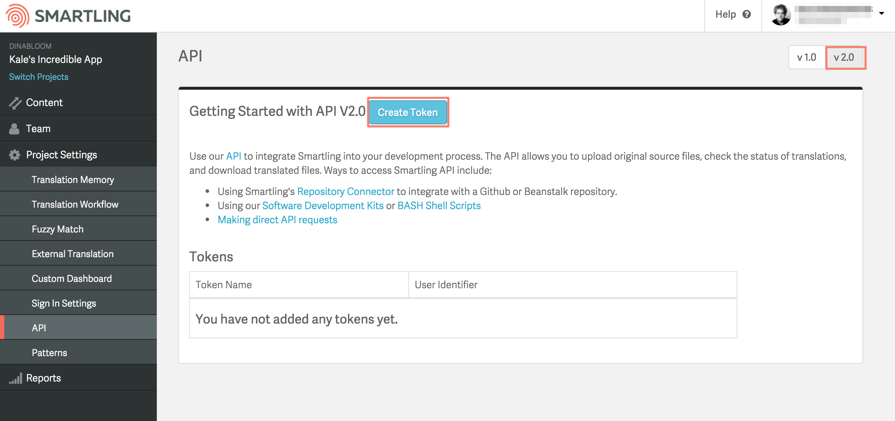
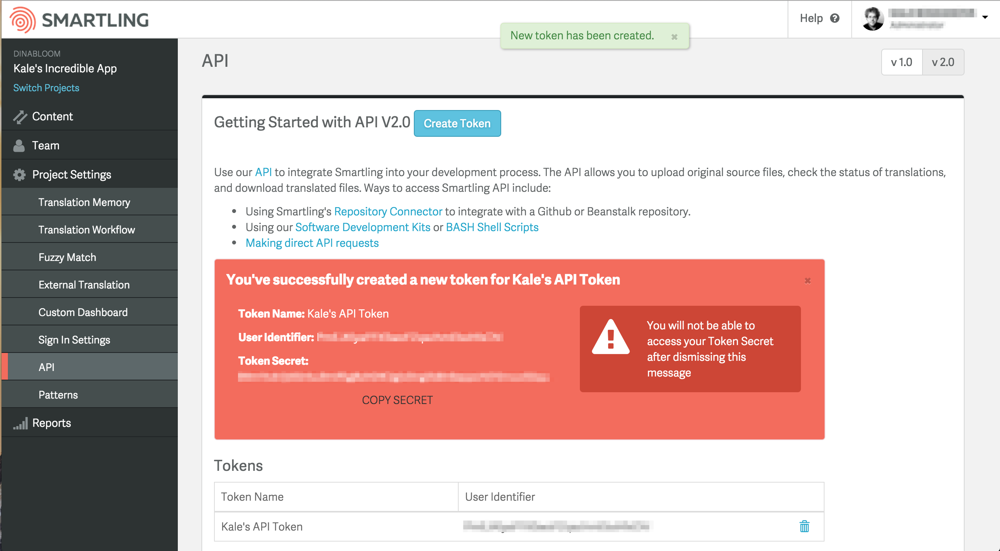

Smartling is rolling out a new, expanded suite of APIs. Beginning with Authentication and Files APIs. API v1 is still supported but will be deprecated [date].
Version 2 of FilesAPI will be familiar to you if you’ve used v1 but there are some important differences to keep in mind while you’re getting started.
Authentication
V2 APIs replace the single API key with Oauth 2.0 authentication, requiring an access token to be included in the header of every request. Tokens are obtained via an Authenticate request containing a User ID and User Secret.
To obtain a User ID and User Secret:
(1) Navigate to Project Settings > API, switch to the v2.0 tab, click Create Token and enter a name.

(2) Once the token is created, record your User ID and User Secret for use in Authentication requests. Note: The User Secret is only available when the token is first created so make sure you record it immediately.

See Authentication for more information.
Path Variables
Some V2 URLs contain path variables that you need to consider when you write your calls. In FilesAPI there are two path variables that may appear in a URL.
projectId - the unique identifier for a Smartling project. You can find this information in the Smartling dashboard at Project Settings > API.
locale - the locale code for a translated file. You can find a full list of locale codes used in each of your projects in the Smartling dashboard at Project Settings > API.
New Terminology
Some terminology and parameter names in v2 are different from their v1 equivalents. Changes include
localesToApprove parameter in the v1 version of Upload File call is now localeIdsToApprove in v2/last_modified is now /last-modifiedArrays
Most Smartling API arguments are strings, but some v2 calls take arrays as arguments to return information on multiple files or locales. Passing multiple values in a GET request looks like this.
?localeId[]=de-DE&localeId[]=fr-FRDon’t forget the square brackets for array values, even if you’re only passing a single argument.
New Options
If you’re already using v1 of Smartling’s File API, you may be able to improve on your integration with the new, more powerful calls included in v2. Significant new options include:
You now have four different options for downloading files:
Choose between detailed status of a file in a single locale or a summary for all locales.